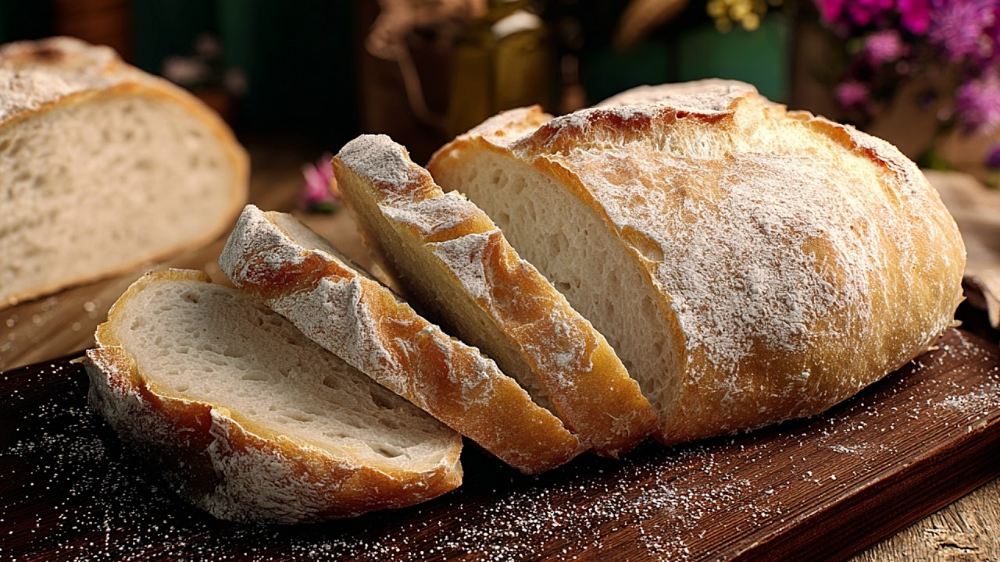
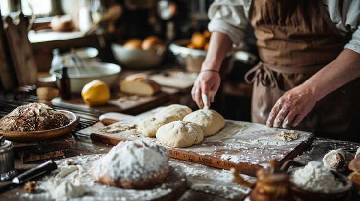
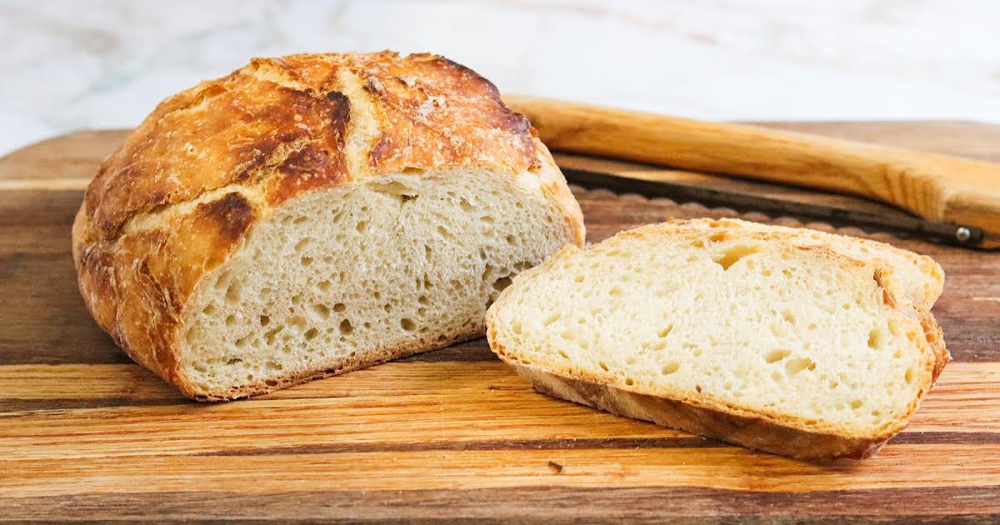

The Science of Sourdough: Understanding Fermentation
Dive deep into the microbiology behind your bubbly starter — and how to control flavor, rise, and crumb.

Tips, techniques, interviews, and the art of natural fermentation — from our bakery to your kitchen.
Dive deep into the microbiology behind your bubbly starter — and how to control flavor, rise, and crumb.
Don't guess — learn the visual and sensory cues for a perfectly active starter.

How a home baker turned her sourdough obsession into a community-supported bakery.

Tips for handling sticky dough and achieving that elusive open crumb.
Starter Guides
12 articles
Baking Techniques
18 articles
Baker Stories
9 articles
Troubleshooting
15 articles
Fresh recipes, baking tips, and stories delivered to your inbox every Sunday.
No spam. Unsubscribe anytime.
Have a baking triumph, a sourdough tip, or a story to share? We'd love to feature your voice on our blog.